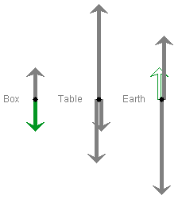
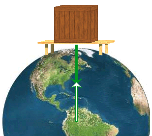

There are four basic control buttons. They are, from left to right:
-
The NEXT button is active only in the two Review modes:
Force Review and Reaction Force Review.
In either of the two Review modes, NEXT lets you continue from one review task to the next. NEXT becomes active only when the feedback "Correct" to a preceding task/question is given in the Answer Quality field at the bottom of the control panel.
-
The applet provides two methods for selecting a force:
-
A. By selecting a force vector in a free-body diagram
by clicking on it (the selected vector is shown
highlighted in solid black, or in white with a black
outline when selecting a reaction force).
- B. By describing a force verbally by means of either the Force or Reaction Force sets of pull-down menus. There are three menus in each set. For details, see Point 3 below.
The two methods will be referred to as Method A and Method B in the following.
You will be expected to select forces or their reaction forces by either Method A or Method B and to SUBMIT your selection for feedback from the applet by clicking the SUBMIT button.
The details depend on the mode the applet is in and are described in Point 4, Modes, below.
-
A. By selecting a force vector in a free-body diagram
by clicking on it (the selected vector is shown
highlighted in solid black, or in white with a black
outline when selecting a reaction force).
-
When the
GIVE UP button is pressed, the applet supplies the response
to a force or reaction force selection task.
For more details, see Point 4, Modes, below.
-
 The Reset button resets the applet to its default
setting.
The Reset button resets the applet to its default
setting.

The Comment text field displays the comments "Correct", "Incorrect", "Not a force", "Negligible", or displays no comment at all when SUBMIT is pressed.
When "Correct" is displayed, press NEXT to continue on to another task.
When "Incorrect" is displayed, you can modify your response and SUBMIT again or you can GIVE UP if you do not know the answer.
The Comment "Not a force" means that you have selected a triplet of words from either the Force or Reaction Force drop-down menus (see Point 3) that does not correspond to a force. An example is "(normal, box, box)". No object can exert a force on itself.
The Comment "Negligible" means that the force selected from either the Force or Reaction Force drop-down menus is negligible in magnitude to the other forces in the free-body diagram. Such forces are not included in the free-body diagrams.
If the Comment is "Not a force" or "Negligible", make another selection and SUBMIT again or GIVE UP.

The control panel contains two rows of drop-down menus with three drop-down menus in each row. The two sets of menus are labeled "Force" and "Reaction Force". See the preceding image. The Reaction Force menus are used only in the two Reaction Force modes. (See Point 4 below.)
Either set of menus are used to specify a force by selecting appropriate words from the three drop-down menus in the set. The menus allow you to select only forces exerted by one part of the box-table-earth system on one of the other three parts. Such forces are either normal contact forces or gravitational forces. The preceding image illustrates how to select the "normal force exerted by the box on the table" by selecting the words "normal", "box", and "table" from the three Force drop-down menus.
Certain combinations of words do not identify a possible force. An object cannot exert a force on itself. Thus the combination "(normal, box, box)" does not identify a force. If a combination like this is chosen from the drop-down menus, the applet responds with "Not a force" in the Comment text field. To continue, choose another combination of words from the drop-down menus. The response "Not a force" is also given for the combination "(normal, box, earth)" because the box is not in direct contact with the earth and therefore cannot exert a normal force on the earth.
The combination "(gravitational, table, box)" produces the comment "Negligible" because the gravitational force exerted by the table on the box is totally negligible compared to the other possible forces. If the applet gives the comment "Negligible", you can continue by choosing another combination of words from the drop-down menus.
The applet can be run in four modes, called "Force", "Force Review", "Reaction Force", "Reaction Force Review". The mode is selected by clicking one of the four radio buttons. The four modes function as follows.
The description of the modes refers to Methods A and B that are defined above under Point 1, Control Buttons, Submit.
Force Mode. This mode provides practice in identifying the forces exerted by a part of the box-table-earth system on another part and in describing these forces verbally.
Select a force by either Method A or B. The SUBMIT button becomes active. When it is pressed, the applet responds as follows:
-
force chosen by the user via Method A: the
applet identifies the force via Method B, renders the
force vector in the free-body diagram in the
appropriate color (see Point 5, Free-Body Diagrams),
and adds the force vector to the image of the physical
system with the tail end of the vector at the point
where the force is acting.
- force chosen by the user via Method B: the applet identifies the force via Method A and adds the force vector to the image of the physical system; or, if no force exists that corresponds to the three words selected via Method B, the applet gives the feedback "Not a force" in the Comment text field; if the magnitude of the force chosen is negligible and the force therefore not considered by the applet, the feedback "Negligible" is given.
You can continue by selecting another force via Method A or Method B.
Force Review Mode. In this mode, the applet initially selects a force by either Method A or B. You are expected to select the same force by the "other" Method, the one not used by the applet. If the applet selects a force by Method B, the words in the Force menus are shown dimmed because the menus are inactive so that the selection cannot be changed.
SUBMIT your response. The applet will give the feedback "Correct", "Incorrect", "Not a force", or "Negligible" in the Comment text field.
If the feedback is "Incorrect", "Not a force", or "Negligible", change your selection and SUBMIT again. If necessary, you can also GIVE UP.
If the feedback is "Correct" or if you pressed GIVE UP, the Next button is made active. Press NEXT to continue on to another force.
The applet selects the possible eight forces in random order until all eight forces have been selected.
Reaction Force Mode. This mode provides practice in identifying the Newton's-third-law reaction force to a force chosen by you.
Select a force by either Method A or B. The SUBMIT button is made active. When you SUBMIT, the applet responds as follows:
-
force chosen by user via Method A: the applet
selects the force via Method B, renders the force
vector in the free-body diagram in the appropriate
color (see Point 5, Free-Body Diagrams), adds the
force vector to the image of the physical system with
the tail end of the vector at the point where the
force is acting, indicates the reaction force vector
by both Methods A and B, and adds the reaction force
vector to the image of the physical system.
- force chosen by user via Method B: the applet selects the force via Method A, adds the force vector in the image of the physical system, selects the reaction force by both Methods A and B, and adds the reaction force vector to the image of the physical system; or, if no force exists that corresponds to the three words selected via Method B, the applet gives the feedback "Not a force" in the Comment text field; the applet gives the feedback "Negligible" if the magnitude of the force is neglible compared to the other forces and this force therefore is not included in the free-body diagrams.
You can continue by selecting another force via Method A or Method B.
A reaction force is represented by an arrow in "inverted" colors, i.e., with an outline in the color of the corresponding force vector but with a white interior.
The words shown by the applet in the Reaction Force menus are shown dimmed because the menus are inactive so that their display cannot be changed.
Reaction Force Review Mode. In this mode, the applet selects a force, by both Methods A and B, and shows the force vector in the image of the box-table-earth system. The words in the Force menus are shown dimmed because the menus are inactive so that the selection cannot be changed.
You are expected to select the corresponding reaction force, by either Method A or Method B. Press SUBMIT when you have done this.
The applet provides appropriate feedback in the Comment text field as desribed under Reaction Force Mode above.
If the applet's response is anything other than "Correct", you can change your response and SUBMIT again or GIVE UP. If the applet responds with "Correct" or if you pressed GIVE UP, you can press NEXT to continue.
The applet presents the eight possible forces in random order until the reaction forces to all eight forces have been identified.

The applet displays a free-body diagram for each of the three parts of the system, the box, the table, and the earth.
Initially, all force vectors are shown in grey. When a force vector is selected, it is highlighted in solid black; it is highlighted in white with a black outline if a reaction force is selected. After a SUBMIT, the highligted vector is rendered in color, blue for a normal force and green for a gravitational force.
An action-reaction force pair has both vectors represented in the same color because if one member of the pair is a normal (gravitational) force then so is the other one. However, a reaction force is represented by an arrow in "inverted" colors, i.e., with an outline in the color of the corresponding force vector and a white interior.
In the preceding image of the three free-body diagrams, the diagram for the box has the gravitational force exerted by the earth on the box selected in green and the diagram for the earth has the corresponding reaction force, which is the gravitational force exerted by the box on the earth, selected in "inverted green".
You can select a vector in a free-body diagram by clicking on it. To change your selection, click on another vector.
The normal force exerted by the earth on the table consists of four separate normal forces exerted on the legs of the table. The free-body diagram for the table shows the total normal force exerted by the earth on the table, which is the sum of these four separate forces. The same applies to other forces that are composed of several smaller forces.
The arrows representing forces are drawn to scale, conforming to the assumption that the table weighs twice as much as the box.

The applet adds force vectors to the image of the box-table-earth system, as in the preceding illustration. A force vector is placed so that its tail end is located at the point where the force is acting.
Note that gravitational forces are distributed forces that act on all parts of an extended object and that can be replaced by a single effective force acting at the center of the gravity of the object. Thus gravitational forces exerted on the earth are represented by arrows that have their tail ends at the center of the earth. See the upward pointing arrow representing the gravitational force exerted by the table on the earth in the preceding illustration.
The center of gravity of the table is assumed to be just slightly below the table platform (the table's legs have weight too and cause the center of gravity of the table to be below the table's platform), and this is where the applet places the tail end of the arrow representing the gravitational force exerted by the earth on the table. See the green arrow in the preceding illustration.
The normal force exerted by the earth on the table consists of four separate forces acting on the four legs of the table and is represented accordingly. Similarly, the reaction force to this force. It is represented by four forces acting on the earth.
For a each mode, a framed text in the top left corner of the applet window indicates what you are expected to do in that mode. For details on the different modes, see Point 4 above.